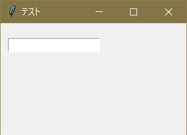
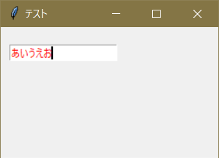
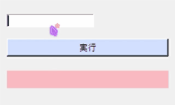

エントリーの定義、カスタマイズ
エントリーとはPythonの input() にのようにユーザーからの入力を受け付けるものだ。使用するには Entry() を用いる。
ent = t.Entry()
エントリーの設置にも pack() か place() を用いる。そしてこれまでと同じように width 、 height 、 font 、 foreground などのオプションが利用できる。
詳しくは第３章：ラベルのカスタマイズを参照。
実行例１
import tkinter as t
app = t.Tk()
app.title( 'テスト' )
app.geometry( '250x150' )
ent = t.Entry( foreground = 'red' )
ent.place( x = 10, y = 20 )
app.mainloop()
実行結果


s = ent.get()
また、get() で取得した値は全てstr型だ。
>> print( type( ent.get() ) )
<class 'str'>
なので、入力値を数値として扱いたいときは下記のようにするとよい。
#整数値として受け取る
s = int( ent.get() )
#小数点ありで受け取る
s = float( ent.get() )
エントリーに文字列を挿入する。
エントリーに文字列を挿入するには insert() を用いる。insert() の構文は下記だ。
ent.insert(「挿入したい箇所」,「挿入する文字列」)
例えば 'あ' を挿入したければ下記だ。
#１文字目に挿入
ent.insert( 0, 'あ' )
#２文字目に挿入
ent.insert( 1, 'あ' )
#末尾に挿入
ent.insert( t.END, 'あ' )
t.END とはtkinterにて文字列の末尾をあらわすもので、使用する機会が多いと思うので覚えておきたい。
また、文字列の挿入はもともとそこにあった文字が上書きされることを留意する必要がある。
「 'あ' ＋ 入力した文字列 」 にしたければ下記のようにすればよい。
#「'あ' + 入力した文字列」を変数に格納
s = 'あ' + ent.get()
#エントリーの内容を削除する
ent.delete( 0, t.END )
#エントリーにsを挿入する
ent.insert( 0, s )
ここで使用した delete() の説明は次節"エントリーの内容を削除する"にて行う。
エントリーの内容を削除する。
エントリーの内容を削除するには delete() を用いる。delete() の構文は下記だ。
ent.delete(「開始位置」,「終了位置」) #開始位置から終了位置までにある文字列を削除する
使用例を挙げる。
#１文字目を削除
ent.delete( 0, 1 )
#２～３文字目を削除
ent.delete( 2, 4 )
#全てを削除
ent.delete( 0, t.END )
ここまでの知識を用いて、ボタンを押すとエントリーの文字列をラベルに表示し、エントリーの内容をリセットするプログラムを記載する。
実行例２
import tkinter as t
def func(event):
s = ent.get()
lab[ 'text' ] = s
ent.delete( 0, t.END )
app = t.Tk()
app.title( 'テスト' )
app.geometry( '250x150' )
ent = t.Entry( foreground = 'red' )
ent.place( x = 10, y = 20 )
but = t.Button( text = '実行', background = '#CFDFFF' )
but.place( x = 10, y = 55, width = 230, height = 25 )
but.bind( '<Button-1>', func )
lab = t.Label( background = '#FFC0C0' )
lab.place( x = 10, y = 100, width = 230, height = 25 )
app.mainloop()
実行結果（gif画像）

#左寄せ
ent[ 'justify' ] = t.LEFT
#中央寄せ
ent[ 'justify' ] = t.CENTER
#右寄せ
ent[ 'justify' ] = t.RIGHT
#また、エントリーの定義時に指定することもできる。
#左寄せ
ent = t.Entry( justify = t.LEFT )
#中央寄せ
ent = t.Entry( justify = t.CENTER )
#右寄せ
ent = t.Entry( justify = t.RIGHT )
文字を伏字にする
パスワードなどを入力する際に文字を伏字にすることがある。それには show オプションを用いる。
#全て「*」で表記する
ent[ 'show' ] = '*'
#全て「？」で表記する
ent[ 'show' ] = '？'
#また、エントリーの定義時に指定することもできる。
#全て「●」で表記する
ent = t.Entry( show = '●' )
スクロールバーを作る
スクロールバーの作成には複数のステップを要する。詳しくは第７章："スクロールバー"を参照。
その他オプション
代表的なものをいくつか挙げる。
| キーワード |
意味 |
| cursor |
マウスカーソルの形を指定する
arrow→通常、wait→待ち状態、など |
| invalidcommand |
入力値が正しくない場合に実行する関数を指定する |
| validatecommand |
入力値が正しくないかどうかを判定する関数を指定する |
| xscrollcommand |
横軸にスクロールバーを紐づける。
詳しくは第７章を参照 |
その他のオプションに関しては外部サイトで詳しいものが複数あるので下記リンク先などをご参照いただきたい。
"【Python GUI Tkinterリファレンス】ttk.Entry(エントリー:テキストボックス)のオプション"
(https://suzutaka-programming.com/tkinter-ttk-entry-option/)